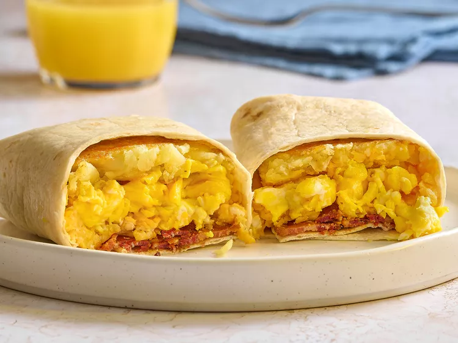

Breakfast Burrito

This breakfast burrito comes together quickly. Scrambled eggs, bacon, cheese, and a hashbrown patty are served up in a tortilla for a satisfying start into your day.
Ingredients
- 2 strips bacon, or more to taste
- 1 frozen hashbrown patty
- 2 eggs, beaten, or more to taste
- 1/4 cup shredded Cheddar and Swiss cheese mixture
- salt and freshly ground black pepper, to taste
- 1 (12-Inch) flour tortilla
Steps
- Gather all ingredients
- Place bacon in a large skillet and cook over medium-high heat, turning occasionally, until evenly browned and crisp, about 10 minutes.
- Drain most of the bacon grease out of the skillet. Add hashbrown patty to the remaining hot bacon grease and fry over medium heat until hot, crispy, and golden brown, about 5 minutes. You can also use canola or grapeseed oil instead of bacon grease
- Meanwhile, pour beaten eggs into a nonstick pan or flat top; let cook undisturbed until the bottom of the eggs begins to firm, 1 to 2 minutes. Stir in Cheddar and Swiss cheese and season with salt and pepper.
- Cook and stir until eggs are nearly set, light, and fluffy, 3 to 4 minutes more.
- While eggs are cooking, heat tortilla on the stovetop until lightly browned and warm.
- To assemble the burrito, place hashbrown patty onto the tortilla. Top with scrambled eggs and bacon. Fold two sides of the burrito to the center, roll up, and serve.
Home